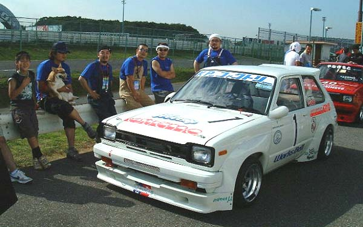
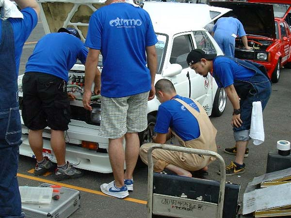
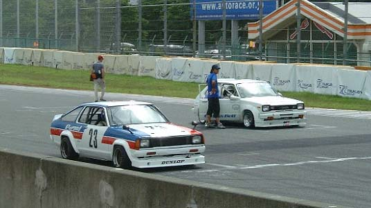
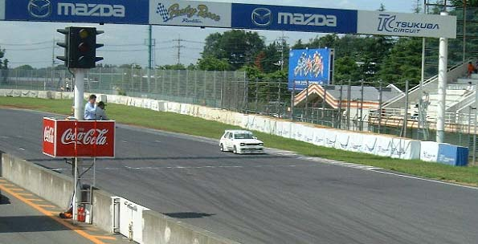

JCCA TSUKUBA MEETING SUMMER TSカップ第2戦
名称：JCCAクラシックカーフェスティバル 筑波ミーティングサマー
会場：筑波サーキット国内公認コース（全長2,045km） 茨城県結城郡千代川村大字村岡
主催，レース主管：日本クラシックカー協会（JCCA）
レース公認：日本自動車連盟（JAF）
運営協力：東京自動車クラブ／モータースポーツクラブピット
協力：横浜ゴム（株）／（株）リョーショクリカー／京商（株）／トタル・ルプリカンツジャパン（株）
会場：筑波サーキット国内公認コース（全長2,045km） 茨城県結城郡千代川村大字村岡
主催，レース主管：日本クラシックカー協会（JCCA）
レース公認：日本自動車連盟（JAF）
運営協力：東京自動車クラブ／モータースポーツクラブピット
協力：横浜ゴム（株）／（株）リョーショクリカー／京商（株）／トタル・ルプリカンツジャパン（株）
レースレポート
開催日：2004年7月11日（日）
天候：晴れ
参加クラス：TSカップ TS-1クラス（1300ccを境にTS-1，TS-2に別けられレースは2クラス混走）
参加台数： TS-1クラス KP61 1台，310サニー1台 計2台 / TS-2クラス KP61 1台，310サニー6台 計7台 （2クラス合計9台）
車名：KP-ファクトリースターレット （車番1）
ドライバー：田中 信夫 （たなか のぶお）
監督：二瓶 剛志 （にへい つよし）
＜予選＞
予選は9時から12分間。
今回はテスト走行が出来ていないので不安要素を残しつつコースイン。
キャブレーションが合わずに立ち上がりでの加速が鈍く思うようにタイムが上がらない・・・
時間的にセッティング変更を行う余裕が無いのでアクセルコントロールでだましながらそのまま走行し、クラス1位、2クラス併せて2位のまま時間終了。
＜車両保管＞
早速ジェットを交換、テスト的にデータの無いまま装着したインダクションBOXを取り外し。
タイヤからバイブレーションが出ていたので新品に交換。
ほぼ初戦時に近いセッティングに戻し決勝へ・・・・
＜決勝＞
予選からの変更に手ごたえを感じつつ決勝グリッドへ。
1周のフォーメーションを終え、再びグリッドにつき精神統一。
初戦でのスタートミスを反省し、練習を積んだ成果を発揮する瞬間です・・・。
シグナルスタート！！
ほぼ理想通りのスタートにて排気量の違いも感じさせず1コーナーをトップで進入。
立ち上がりもトップをしっかりキープしたまま第1ヘアピンに進入。
・・・・ここで痛恨のスピン。
エンジンスタートに60秒以上かかり、リタイヤが頭をよぎったその時にエンジン始動。
最下位まで順位を落としましたが、これで終わる訳には行きません・・・
コンスタントに6秒台の予選を上回るタイムで炎の追い上げを見せます。
スタッフ一同（たぶんお客さんも）まさか？の期待に胸が躍ります。
がしかし、つわものぞろいのTSカップ、あまりにも開いてしまったタイム差を簡単には縮められません・・・
4位まで追い上げたたものの追走むなしく決勝終了・・・。
＜結果＞
クラス1位、決勝のファーステストラップは得たものの、今回はお立ち台に上がることはできませんでした。
車両に大きなトラブルは無く、決勝では予選時よりも調子良くなった分悔やまれますが、8月の第3戦に向けて気合を入れなおしたいと思います。
ご協力くださったスポンサー各位、大勢の応援くださった皆様に心より感謝を申し上げます。
これからも応援よろしくお願い致します。
天候：晴れ
参加クラス：TSカップ TS-1クラス（1300ccを境にTS-1，TS-2に別けられレースは2クラス混走）
参加台数： TS-1クラス KP61 1台，310サニー1台 計2台 / TS-2クラス KP61 1台，310サニー6台 計7台 （2クラス合計9台）
車名：KP-ファクトリースターレット （車番1）
ドライバー：田中 信夫 （たなか のぶお）
監督：二瓶 剛志 （にへい つよし）
＜予選＞
予選は9時から12分間。
今回はテスト走行が出来ていないので不安要素を残しつつコースイン。
キャブレーションが合わずに立ち上がりでの加速が鈍く思うようにタイムが上がらない・・・
時間的にセッティング変更を行う余裕が無いのでアクセルコントロールでだましながらそのまま走行し、クラス1位、2クラス併せて2位のまま時間終了。
＜車両保管＞
早速ジェットを交換、テスト的にデータの無いまま装着したインダクションBOXを取り外し。
タイヤからバイブレーションが出ていたので新品に交換。
ほぼ初戦時に近いセッティングに戻し決勝へ・・・・
＜決勝＞
予選からの変更に手ごたえを感じつつ決勝グリッドへ。
1周のフォーメーションを終え、再びグリッドにつき精神統一。
初戦でのスタートミスを反省し、練習を積んだ成果を発揮する瞬間です・・・。
シグナルスタート！！
ほぼ理想通りのスタートにて排気量の違いも感じさせず1コーナーをトップで進入。
立ち上がりもトップをしっかりキープしたまま第1ヘアピンに進入。
・・・・ここで痛恨のスピン。
エンジンスタートに60秒以上かかり、リタイヤが頭をよぎったその時にエンジン始動。
最下位まで順位を落としましたが、これで終わる訳には行きません・・・
コンスタントに6秒台の予選を上回るタイムで炎の追い上げを見せます。
スタッフ一同（たぶんお客さんも）まさか？の期待に胸が躍ります。
がしかし、つわものぞろいのTSカップ、あまりにも開いてしまったタイム差を簡単には縮められません・・・
4位まで追い上げたたものの追走むなしく決勝終了・・・。
＜結果＞
クラス1位、決勝のファーステストラップは得たものの、今回はお立ち台に上がることはできませんでした。
車両に大きなトラブルは無く、決勝では予選時よりも調子良くなった分悔やまれますが、8月の第3戦に向けて気合を入れなおしたいと思います。
ご協力くださったスポンサー各位、大勢の応援くださった皆様に心より感謝を申し上げます。
これからも応援よろしくお願い致します。
（つよし）




リザルト
予選
| 順位 | 車番 | クラス | 順 | ドライバー | 型式 | 車名 | ベストタイム |
|---|---|---|---|---|---|---|---|
| 1 | 23 | 2 | 1 | 佐野 孝一 | HB310 | ピットロードサニー | 1'06.342 |
| 2 | 1 | 1 | 1 | 田中 信夫 | KP61 | ＫＰファクトリースターレット | 1'06.903 |
| 3 | 30 | 2 | 2 | 野部 賢一 | PB310 | チームポイズンプライベートサニー | 1'07.494 |
| 4 | 40 | 1 | 2 | 柳本 文彦 | B310 | オートサービスやなぎもとサニー | 1'08.444 |
| 5 | 8 | 2 | 3 | 本山 喜広 | HB310 | Ｂｕｌｌｅｔｓサニー | 1'08.652 |
| 6 | 44 | 2 | 4 | 神崎 猛 | HB310 | ＢＣＣ Ｆａｃｔｏｒｙサニー | 1'09.117 |
| 7 | 72 | 2 | 5 | 間瀬 陽平 | KP61 | デラックスＥＮＧスターレット | 1'09.210 |
| 8 | 32 | 2 | 6 | 中村 善行 | GB310 | クレイジーＺサニー | 1'09.409 |
| 9 | 16 | 2 | 7 | 小倉 良道 | PB310 | トレド２４６トリイもどきサニー | 1'16.511 |
決勝
| 順位 | 車番 | クラス | 順 | ドライバー | 型式 | 車名 | 周回 | 所要時間 |
|---|---|---|---|---|---|---|---|---|
| 1 | 23 | 2 | 1 | 佐野 孝一 | HB310 | ピットロードサニー | 15 | 17'08.318 |
| 2 | 30 | 2 | 2 | 野部 賢一 | PB310 | チームポイズンプライベートサニー | 15 | 17'09.223 |
| 3 | 8 | 2 | 3 | 本山 喜広 | HB310 | Ｂｕｌｌｅｔｓサニー | 15 | 17'44.910 |
| 4 | 1 | 1 | 1 | 田中 信夫 | KP61 | ＫＰファクトリースターレット | 15 | 17'54.558 |
| 5 | 44 | 2 | 4 | 神崎 猛 | HB310 | ＢＣＣ Ｆａｃｔｏｒｙサニー | 15 | 18'01.742 |
| 6 | 32 | 2 | 5 | 中村 善行 | GB310 | クレイジーＺサニー | 15 | 18'04.724 |
| 7 | 16 | 2 | 6 | 小倉 良道 | PB310 | トレド２４６トリイもどきサニー | 15 | 18'05.386 |
| - | 72 | 2 | - | 間瀬 陽平 | KP61 | デラックスＥＮＧスターレット | 9 | - |
| スタート | 14:08'02.00 |
|---|---|
| フィニッシュ | 14:25'10.318 |
| 参加台数 / 出走台数 / 完走台数 | 9台 / 8台 / 7台 |
| ベストタイム | No.1 （田中 信夫） 1'06.175 （9/15周） 111.250km/h |
| クラス | 1:TS-1 2:TS-2 |